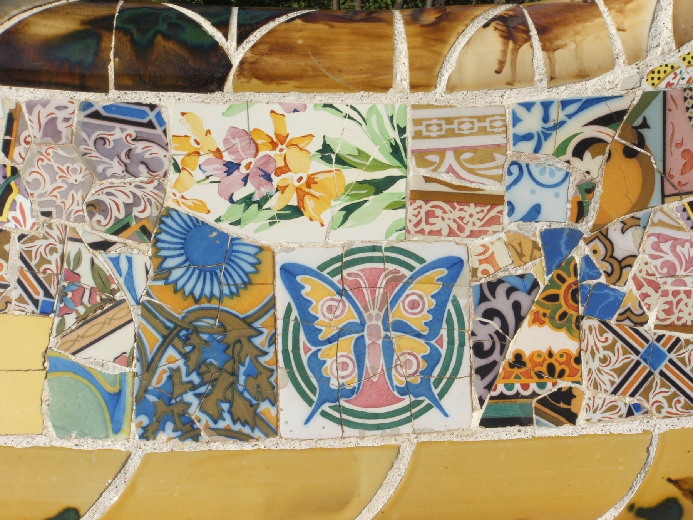

The Serpentine Bench · A Park Stitched From Broken Tile

At first glance it doesn't even read as a bench — more like a shattered china cabinet stitched back together. Lean in and you'll pick out a hand-painted iris, a cobalt-and-gold butterfly medallion, a sunflower, Moorish-style geometric bands, and Delft-blue floral scraps, all strangers to each other, held together by nothing but white grout lines. This isn't bohemian-collage styling for its own sake — it's Gaudí, with his young assistant Josep Maria Jujol, building the skin of an entire park bench out of a ceramics factory's rejects.
01Composition
Along the upper terrace of Park Güell's "Nature Square," an undulating bench snakes for over 100 meters, tracing the terrain's curves. At each S-bend it widens into a shallow arc, just enough to enclose two or three people in a private pocket — part of why it's often called the longest bench in the world. This close-up catches one bend of the backrest: a rounded ochre-glazed rail runs the edge above, and a dense patchwork of ceramic fragments spreads below, the two separated by a ring of white grout — like a header sitting above a page of text.
02Color Theory
Every fragment arrives pre-colored and pre-patterned — pink-and-yellow iris petals, cobalt-and-ochre butterfly wings, a sunflower with a deep-blue center, pine-green concentric rings. Gaudí and Jujol weren't painting from a swatch book; they were arranging factory offcuts of wildly different sizes by eye and feel, on site. The result reads as tamed chaos: a solid ochre glazed band runs like a parenthesis around the dense pattern below, keeping the riot of color from spilling out of control.
03Technique
The technique is trencadís — Catalan for "broken pieces" — which Gaudí used extensively from the 1900s on: whole tiles, plates, even factory seconds smashed into irregular shards and pressed into a wet cement base. Much of the ceramic used on this bench came from the Pujol i Bausis tile works in nearby Esplugues de Llobregat — factory rejects that didn't match into full sets, repurposed rather than discarded, arguably an early case of design-by-waste-stream. Art historians credit much of the bench's color and pattern composition to Josep Maria Jujol, then a young assistant in Gaudí's studio who was given near-total creative license here; Gaudí controlled the structural curve, Jujol improvised the color arrangement on site.
04Why It Moves Us
Part of what makes this bench land is that its curve wasn't decided first and tiled second. As the story goes — more enduring site legend than verified fact, though the fit is precise enough to believe — Gaudí had a workman sit in wet plaster to cast a body-fitting seat curve directly from a human back and legs. More provably, the bench also serves as the parapet over the roof of the Hall of a Hundred Columns below and the rim of a rainwater cistern beneath the plaza — the curve answers to structure and drainage first, decoration second. And the trencadís mosaic turns factory waste into spectacle: no meter of pattern repeats, a proto-"photo spot" surface built more than a century before that phrase existed.
05Background
Park Güell was commissioned in 1900 by industrialist Eusebi Güell as an English-style garden city, planned for sixty private residential plots. Only two show houses were ever built — Gaudí himself lived in one, now the Gaudí House Museum — before the real-estate venture failed. Barcelona's city council bought the grounds in the early 1920s and opened it as a public park in 1926, the same year Gaudí died. It was inscribed on UNESCO's World Heritage List in 1984 as part of "Works of Antoni Gaudí." Beneath the terrace where the bench sits is the Hall of a Hundred Columns (Sala Hipòstila) — originally planned for one hundred columns, built with eighty-six — meant to support the square above and shelter a market that was never realized.
06Steal This
- Don't throw out mismatched scraps — sort broken tile or crockery by color family and piece it together; it reads richer, and more storied, than a matched set ever could.
- Run one solid glazed color band as a border or "rest stop" between dense patterned zones, so the eye has somewhere to land.
- Leave the grout lines and crack marks visible — don't sand them smooth. The irregularity is the point; over-polishing kills the handmade feel.
{kind=link}